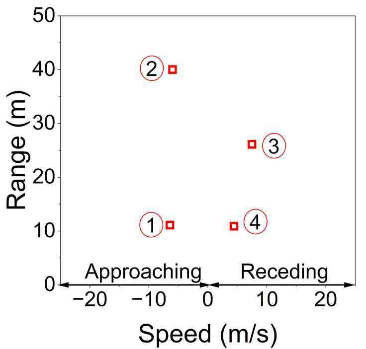
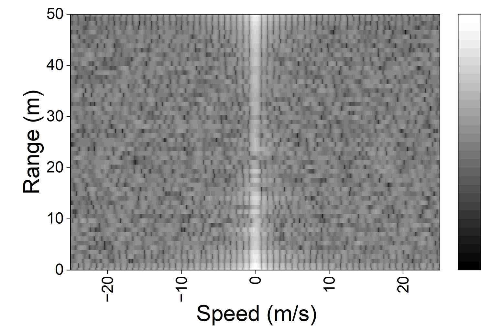

01 FMCW 종합설계 · 2025
접근 차량을 구분하고,
이동을 추적하다.
보행자 안전을 위해 레이다 Raw Data에서 객체의 거리·속도·특징을 추출하고, 접근 차량 경고로 연결했습니다.
- 내 기여
- MATLAB 신호 분석, PSD 기반 식별과 Kalman Filter 적용
- 팀 결과
- 수집 → 분류 → 추적 → 경고 시스템 구현, 후속 논문으로 확장
프로젝트 과정 자세히 보기 ＋
문제와 설계 판단
안전 경고에서는 판단의 근거와 연산 부담을 함께 고려해야 합니다. 신호의 물리적 특징을 활용하는 PSD 기반 접근을 적용했습니다. MATLAB에서 센서 입력부터 접근 경고까지 연결해 동작을 확인했습니다.
개인 기여와 검증
Raw Data의 Doppler 성분을 분석하고 PSD 특징을 식별에 반영했습니다. Kalman Filter를 결합해 탐지 이력을 안정화하고 MATLAB에서 결과를 비교했습니다. 실험 결과를 바탕으로 필터링과 추적 조건을 보완하며 후속 연구로 발전시켰습니다.
AWR1843BOOST
레이다 측정→DCA1000EVM
Raw IQ 수집→FFT · PSD
거리·속도·식별→Kalman Filter
추적 · 접근 경고
레이다 측정→DCA1000EVM
Raw IQ 수집→FFT · PSD
거리·속도·식별→Kalman Filter
추적 · 접근 경고
